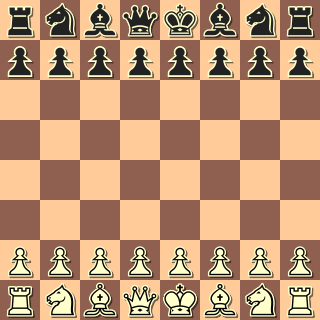
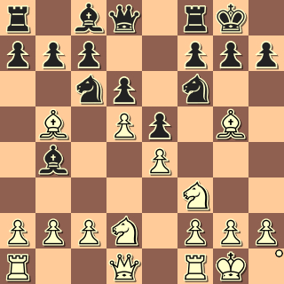
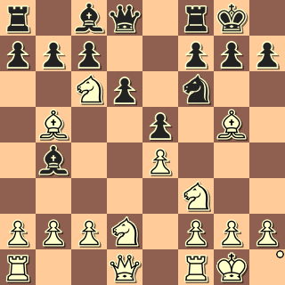
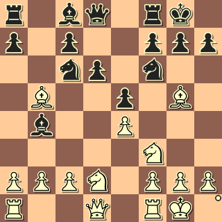
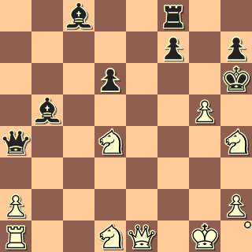

Insurrection is a Chess variant where individual pieces can move up or down in rank via capture, and governments are toppled.
Insurrection is set up exactly like in orthodox Chess, shown below:

The game uses the standard set of chess pieces. However, because of succession (described later) you might wish to have addional sets of pieces on hand.
All of the pieces in Insurrection move in the same way that they move in orthodox Chess, but there are a couple of changes regarding promotion and capturing.
Pawn promotion occurs just as in orthodox Chess, however a pawn can also promote to a King. The implications of this change will become apparent later.
Capturing in Insurrection occurs exactly as in orthodox Chess, but the real fun begins once captures occur.
In Insurrection, any time that a piece captures another piece the capturing piece immediately becomes the same rank as the captured piece. For example, observe the following scenario:

If the white pawn on d5 captures the knight on c6 then it will succeed to knighthood (i.e. it becomes a knight itself):

The new knight would put immediate pressure on the black queen. Black might likewise capture the new knight:

This time the black pawn succeeded to knighthood. However, white might decide to capture the new black knight resulting in the white bishop declining into knighthood. Of course, the queen is once again in danger, but the remaining moves are left as an exercise to the reader.
The rank of a piece is proportional to its value, therefore the follows piece rankings, from lowest to highest, are observed in Insurrection:
A capture that causes a piece's rank to increase is a succession while one that causes its rank to decrease is a decline. All of the pieces can succeed or decline throughout the course of a game, even the king. Indeed, while the king starts the game as the piece for which a checkmate is aimed, checkmate in Insurrection is really aimed at any or all of the ranks currently in power. The act of forcing one rank into power over another is called a coup.
Insurrection starts with a monarchy in place. That is, to win the game, a player must checkmate the other player's king -- just like in Chess. However, should a monarchy in power take another piece then a coup will occur in the other player's ranks. A coup describes a change in the government on the board to that representative of the captured (i.e. martyred) piece's rank.
When a coup occurs then any of the remaining pieces of that rank can be checkmated in order to win. The old king becomes a regular piece and can be captured normally.
The only time that a coup does not occur is when a piece in power takes the final piece of a given rank.
Observe:

In the diagram above, should the black king take the attacking pawn then the following board will result:

Unfortunately for white, the coup leads to a catastrophe as the pawn on a2 is placed into check. When a coup leads to a check then the player in danger has one attempt to get out of it. If they are unable to remove the check then they lose. In the case above white has no move that can release the check on the a2 pawn and is therefore checkmated.
The type of coup that occurs depends on the piece captured by an opponent government in power. The names of the types of coups are listed below:
It's fun to yell these names out when a coup occurs.
Rather than wining via the checkmate of any piece of the government in power you can allow assasination instead. That is, if there is more than one piece active for the government in power then all but the last one can be captured, or assasinated. However, the final piece of a government in power must be checkmated.
In Insurrection it's possible (and a strong tactical choice) to check two pieces at the same time. This is known as a forked-check. Save for the loss of the checking piece, a forked-check spells the end of the game.